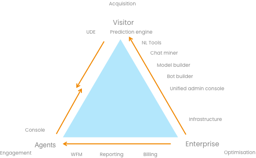
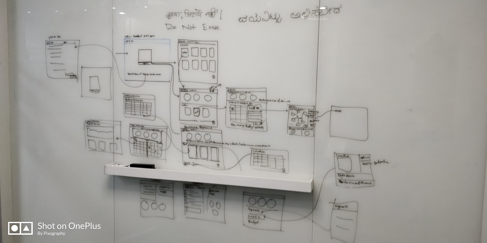
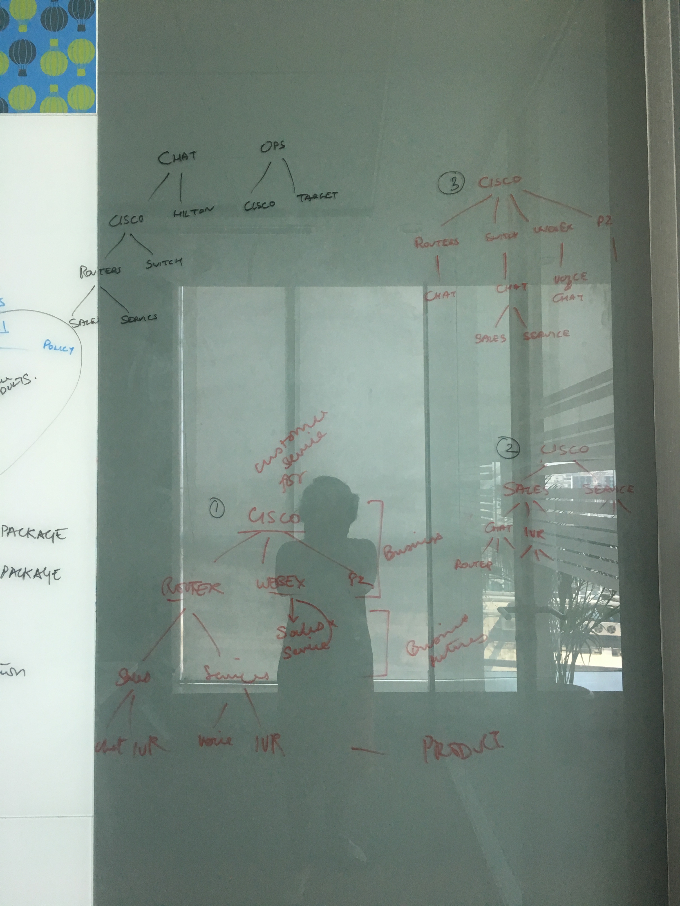
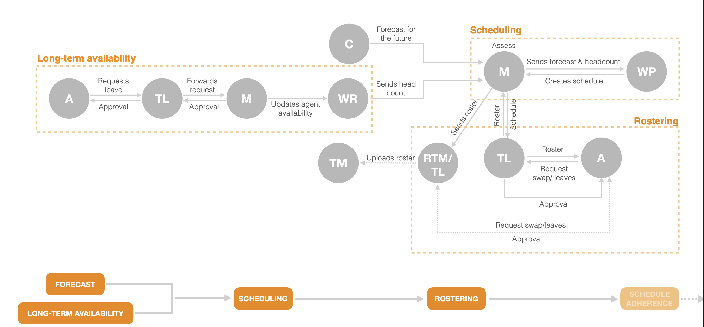
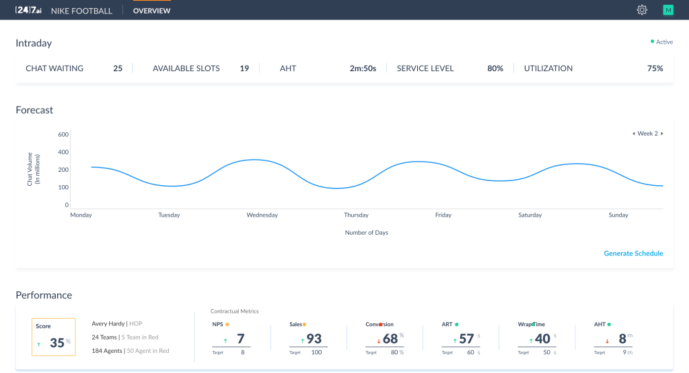
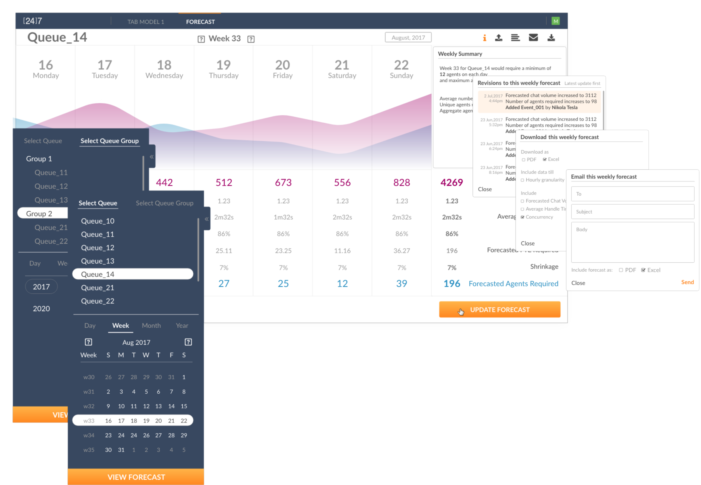
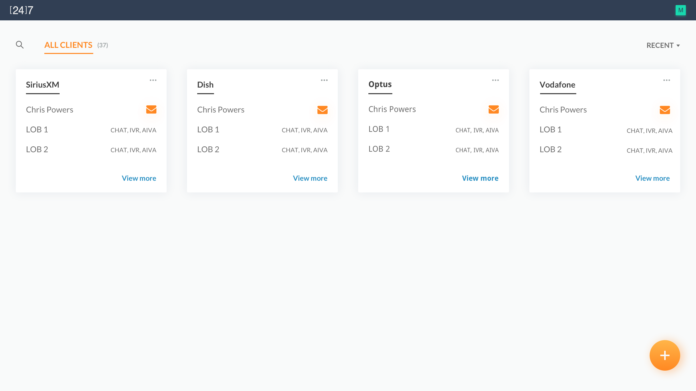
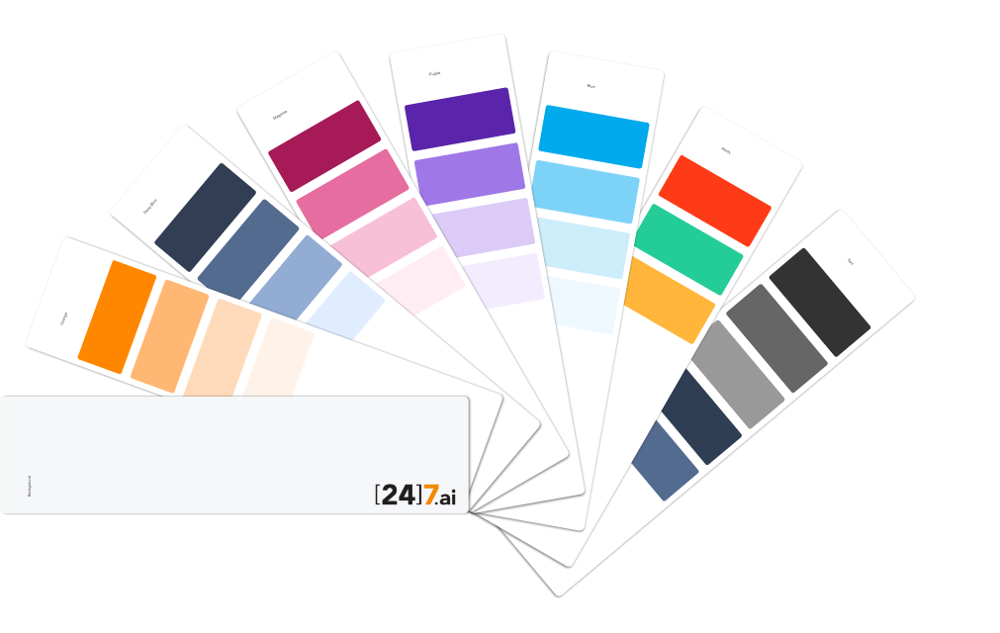
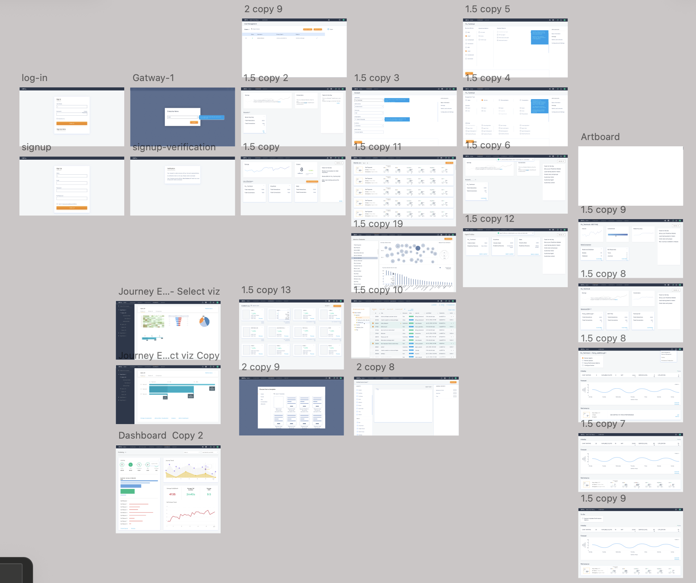

Building a unified Customer Engagement Cloud at [247].ai — WFM platform, AI-human handoff patterns, and a design system for a product that was half-human, half-machine
[247].ai's platform rested on three nodes. The visitor is the end customer — the Best Buy shopper, the Optus subscriber. The enterprise is the client: Best Buy, Optus, Hilton, Target. And agents — bots and humans both — sit between them. Not "bot or human." Agents, as one category, differentiated by what they can do, not by what they are.

The platform architecture: Visitor · Agents (bot and human as one category) · Enterprise. One intelligence layer, one system.
When you don't separate bot and human at the structural level, the intelligence infrastructure has to serve both equally. That's where intent came in.
A customer's intent exists before they contact anyone. It shows up in a Google search — "how do I return my Best Buy order" — in a website visit, a phone call, a chat, a text. [247].ai captured intent across all of it: the Customer Acquisition Cloud even worked at the search layer, where search bidding was part of the platform. By the time a customer reached an agent, their intent had often already been read and classified.
Lines of Business weren't manually defined — they were discovered. The platform ingested each enterprise client's existing contact data: call recordings, chat transcripts, historical interaction logs. An AI system processed this to surface the actual intent patterns already present in the customer base, then grouped them into Lines of Business. Best Buy's patterns emerged from Best Buy's data. Optus's from Optus's. The enterprise didn't need to know upfront what their customers' intents were — the AI found them.
Once discovered and grouped, each Line of Business carried the responses associated with it — made available to every agent on every channel. Both the bot and the human agent draw from the same pool. When the bot hands off to a human, there's no information loss — because the intelligence was always shared. Same data, same context, different actor.

Early architecture session — mapping how intent flows through the platform across agent types, channels, and enterprise Lines of Business

IA work for Cisco — mapping how Chat, OPS, Routex, Webex, and IVR connected across the customer journey. This map became the basis for designing the connections between them.
Agents using this platform worked fast, in noisy environments, moving between tasks all day. I designed the agent portal around what they actually needed during a shift: a clear schedule, an easy way to request swaps, real-time queue status they could act on. Simplicity over configuration — because a tool that gets used is more valuable than a tool that can theoretically do everything.
When AIVA — the AI agent — passes a conversation to a human, that transition matters. The human agent needs to know what just happened. The customer needs to feel continuity. I designed that moment carefully across voice, chat, and digital: customer context surfaced at handoff, intent carried across, conversation history visible and ready. In 2016 nobody had worked this out at scale. The patterns we built here are what people now call agentic UX.
I built the design system from scratch — components, patterns, motion, governance. The practical value was visual consistency. The deeper value was that shared components created shared decisions: teams that had been working independently started to see how their products connected, and making something together became possible. By end of 2019, the platform was working as one.
Workforce management started as a human efficiency problem: how many agents, on which shifts, for which channels. But once "agents" includes both bots and humans, the planning question changes. What percentage of volume does the bot resolve? How does that shift intraday demand for human agents? When a bot escalates, what happens to the queue? WFM had to account for the whole operation — forecasting and scheduling across the full agent pool, not just the human half.
The platform served three human roles with very different relationships to time: agents on the floor who needed things to be immediate and obvious; supervisors watching queues shift in real time; and workforce planners building schedules weeks out. The design work started by mapping how those roles connected — who approved what, who saw what, how information moved between them — before a single screen was drawn.

WFM role and workflow map — showing how forecast, scheduling, rostering, and real-time management connected across Agent, TL, Manager, and Workforce Planner roles. This architecture preceded the screen design.
The platform shipped to Fortune 500 clients including Best Buy, Optus, Hilton, and SiriusXM — each running contact centre operations at scale. Below is the actual WFM supervisor dashboard as shipped, showing one client instance: intraday metrics across chat volume, service level, and agent utilisation, with forecast visualisation and a performance scorecard against contractual targets.

Actual shipped UI — [24]7.ai WFM Intraday Overview, Nike Football client. Live metrics: available slots, AHT, service level, utilisation. Forecast chart + performance scorecard against contractual targets (NPS, Sales, Conversion, AHT).

WFM Forecast view — Queue_14, Week 33, August 2017. Forecasted chat volumes, required agent count by day, shrinkage, and the "Update Forecast" workflow. Queue group navigation and calendar selector for planning cycles.
Interface recreation — WFM Agent Portal · Agent-facing schedule view · recreated to illustrate self-serve scheduling design
Agent portal — weekly schedule grid, real-time adherence, and shift swap management. Designed for agents on the floor, not supervisors at desks.
AIVA was [247].ai's conversational AI — handling the first layer of every customer interaction before a human agent took over. The handoff between them is the critical moment: where the platform either feels continuous or falls apart. I designed the agent-facing console that made that moment work.
When the AI hands off, the agent is ready. Customer intent, conversation history, and suggested first responses are surfaced immediately — so the agent steps into the conversation informed, picks up from where AIVA left off, and the customer experiences it as one interaction, not two.
Interface recreation — AIVA Agent Console · AI-human handoff view · Original shipped 2018, recreated to illustrate handoff design
AIVA agent console — intent captured by AI surfaced at handoff, customer history loaded, suggested responses ready. The agent picks up the conversation, not restarts it.
By end of 2019, the architecture was operational across 37 enterprise clients — SiriusXM, Dish, Optus, Vodafone, Best Buy, Hilton, Target, Choice Hotels — each configured with Chat, IVR, and AIVA capabilities across their Lines of Business. Any customer, any intent, any channel — served by a human or agent.

Actual shipped UI — enterprise client management view. 37 clients, each configured with their Lines of Business and channel mix (Chat, IVR, AIVA). One platform serving all of them.
Three surfaces — WFM, AIVA agent console, and customer-facing AI — all deployed inside the same enterprise client. The design system made them feel like one product because they shared the same visual logic: colour tokens, typographic scale, grid structure, and component patterns, all derived from the same architecture and crowd-sourced across product teams so every team had ownership of the language they were using.

[24]7.ai colour architecture — eight semantic palettes governing the full product surface: navigation, brand, content, status, data visualisation, and semantic states
One spatial logic across WFM and AIVA surfaces. Global nav (44px, navy) → sidebar (180px, dark) → main content (white cards on light ground) → optional right context panel. The same grid applied whether the surface was scheduling agents or handling a live customer handoff.
The same tokens and grid across every surface — WFM scheduling, intraday supervision, AIVA handoff console, enterprise client configuration. A supervisor switching from the schedule view to the agent console sees one product, not two.

The full product family in the unified design system — WFM, AIVA console, and platform analytics. One visual language, one spatial logic, across every surface the enterprise and its agents use.
YoY revenue growth — two consecutive years following platform unification
Cost reduction through standardisation and platform consolidation
Enterprise clients on the unified platform — SiriusXM, Dish, Optus, Vodafone, Best Buy, Hilton, Target and more
Customer Engagement Cloud + Customer Acquisition Cloud — one shared intelligence layer serving both